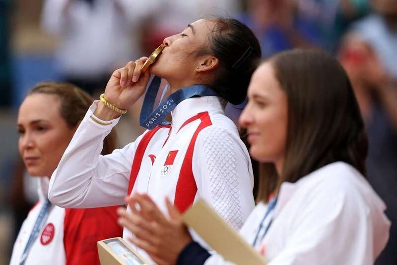
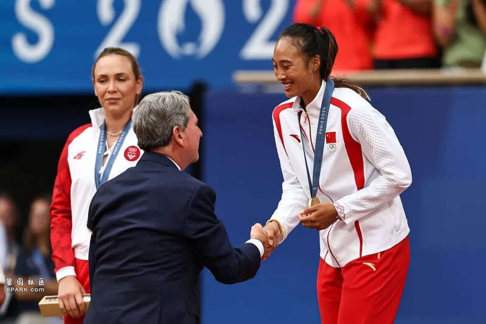
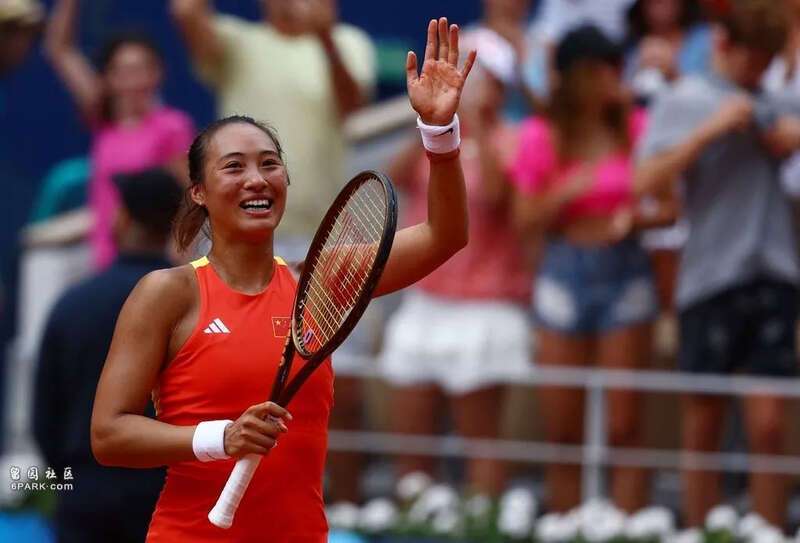

巴黎奥运会，郑钦文毫无疑问是中国代表团乃至全世界最受瞩目的明星：她不仅获得了一枚金牌，而且真正书写了属于自己的传奇。美国一位解说员盛赞她，“会影响很多女孩”。
在巴黎奥运会前，很多中国人也不知道她。三年前，她在WTA的排名还在一百名开外；通过努力，她在去年进入了前20名。但是，她还没有获得过大满贯，疫情以来网球四大满贯赛事在中国的关注度大为下降。即便她能获得一次冠军，也比不上李娜曾经的影响力。
中国人最在乎奥运会。赛后，她开玩笑说，以后要是比赛打不好，也不怕爸爸说了，“因为我是奥运冠军”。不管是对个人还是对中国女网来说，她这个冠军都来得非常及时。
她对此有着清醒的认知，尽管任何一个项目夺冠都有运气的成分，但郑钦文的故事，仍然有着“道路”一般的意义。
她在采访中一直感谢李娜，因为李娜是她真正的偶像。从她小时候开始，父亲就是要复制李娜的道路。她网球的启蒙教练，就是李娜以前的教练。媒体报道，最初教练不想收郑钦文，但“一家三口都跪下来”，教练只好收了。

后来郑钦文到北京学习，她的教练卡洛斯便是李娜以前的教练。李娜的成功，影响到很多人；而郑钦文的成功，则证明李娜模式是真的可以复制的，那就是——找世界上最好的人学习；保持全球眼光，在国际赛场上磨练自己；寻求市场化的成功，花很多钱，也签约经纪公司，寻求个人价值最大化。
这条道路的“成功”，甚至不一定需要奥运冠军的加持。2023年，郑钦文在WTA排名第15名，她的收入就达到了750万美元。
女子网球是最商业化的、收入最高的运动项目，这也是一个巨大的市场。人们感叹她父亲为了培养她花了两三千万，但这种回报也是惊人的。
郑钦文在打网球之前，也尝试过篮球、羽毛球，最后才锁定网球。郑钦文的父亲提炼出了李娜的成功密码。
实际上，这也不是什么秘密，而是中国新兴中产阶层的共识：在教育孩子方面，“新中产”在摸索高考之外的探索，发现孩子的天赋，然后倾其所有进行培养，让孩子在自己的赛道上做到最好。
让人惊叹的，是郑爸爸的敏锐性。当他发现一个教练不能再让孩子进步时，就果断更换教练，不惜一切代价。启蒙教练是他“下跪”得来的，但也很快就更换了。这种敏锐，是“郑钦文故事”偶然也是重要的，甚至比他所谓的“上亿资产”还有决定性。郑钦文的成功，是两代人天赋的结合。
当然，光有天赋还不够。某次比赛中，郑钦文就有了放弃的想法；在暂停休息时，她爸打了她一耳光——这些细节背后，是一种狂热的“绩效主义”在个人身上的体验，不断总结教训、提升自我，把自己的潜能全部挖掘出来。为了保持体脂率和体能，郑钦文像C罗一样，长期坚持吃西兰花和鸡胸肉，不喝任何饮料。
在个性教育、绩效主义之外，还有更重要的——在网球这项运动中，最充分的体现就是开放的心态和真正的国际主义。
疫情三年，很多运动都受到影响。东京奥运会后，有些项目长期都是住酒店。而这三年，郑钦文一直都在海外训练，寻求一切机会提升自己。再过两周，郑钦文就将迎来自己的21岁生日。2020年，她不过17岁，“还是一个孩子”；过去四年，无疑是她从蜕变的关键时期。

四大满贯这样的赛事，也受到疫情影响，有些运动员状态起伏很大。澳大利亚曾经因为德约科维奇没打疫苗，拒绝让他入境参加澳网——这种轻微的动荡和混乱，其实给郑钦文这样的“无名小卒”提供了机会。或许正是这一切因素的综合，成就了郑钦文的传奇。
网友送给郑钦文一个英文名Queen Wen，在夺冠后她也笑纳了。她的英文非常好，接受采访时和中文一样流利。这是海外生活和这项运动本身馈赠给她的礼物。在更大的视野内，我们可以把郑钦文视为“出国留学”年轻人的一员：走出国门，放眼世界，你必须在更大的舞台上证明自己。
网球的道路和传统的“举国模式”不同，它是“个人主义的胜利”，需要家庭财力和持之以恒的努力；它是世界主义的，有自己的赛事体系和商业体系。从李娜、郑洁一代开始，中国球员开始崭露头角。中国网球也进行了改革，允许球员“单飞”，其实就是让“中国网球”融入了网球市场。
李娜夺得大满贯，激励了很多中产家庭。我周围就有两个朋友，在培养孩子打网球。如果中国能够保持开放性，“网球市场”就可以越来越大，出现在大满贯赛事上的中国身影也会越来越多；夺得冠军很难，能站上职业比赛的舞台就算成功，即便没能走上职业化道路，持之以恒投入一项国际化运动仍然是有价值的。
像郑钦文那样获得金牌，当然是极小概率的；但是，她的自信和张扬的个性，却可以是年轻人都应该拥有的。
她说：“要是命运站在自己这一边，就信；如果感觉到命运不在自己这一边，那就不信。”这种精气神儿，正是当下“躺平”的反面。